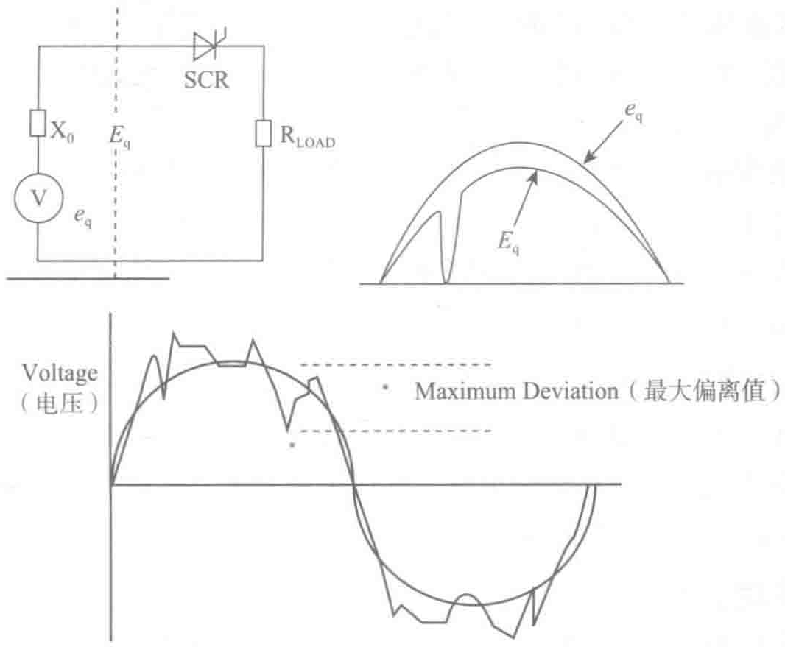

- 通常情况下，制冷系统设备及其他用电设备运行功率因数较低，部分变频设备因其特性附带有谐波电流，发电机选型时应考虑一定的余量。
- 海拔高度对发电机组功率输出的影响：当海拔升高时空气密度也会降低，同样影响柴油机和发电机的输出功率。不同品牌的柴油发电机组要按照厂家的功率修正曲线来计算降额后的实际功率。
- 环境温度对发电机组功率输出的影响：当环境温度过高时，空气密度降低，柴油机燃烧时的氧气量减少，燃烧效率降低，因而会降低柴油机的机械输出功率；同时发电机工作时需要冷空气对绕组进行冷却，温度过高会降低发电机的冷却效果，从而影响发电机的输出功率。各品牌柴油发动机和发电机的输出功率受环境影响的修正参数各不相同，实际设计中建议以各厂家的修正参数为准。
- 选择柴油发电机组连续运行工况有两个影响：长时间市电中断及供电系统灾难性故障停机。核心数据中心应按柴油发电机组以恒定负荷持续功率（COP）运行，且每年运行时数不受限制的最大功率来选用；其他级别数据中心，可考虑采用基本功率（PRP），但应慎重选择。
5.4.8 电源系统中性点的接地方式
选择电力系统中性点的接地方式是一个比较复杂的综合性问题，它与电压等级、单相短路电流、过电压水平、系统的继电保护和自动装置的配置及动作状态、系统供电的可靠性和连续性、人身安全、设备安全等问题有密切关系，并直接影响到电网的绝缘水平。电力系统的中性点是指电力系统三相交流发电机、变压器接成星形的公共点，而电力系统中性点与大地间的电气连接方式，称之为电力系统中性点接地方式。在数据中心供配电系统